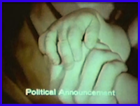
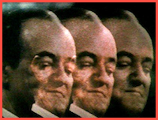
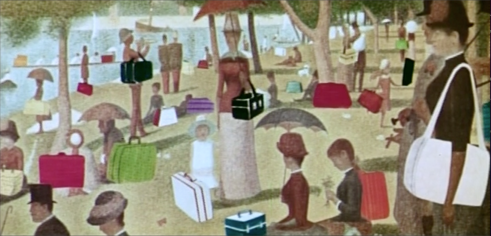
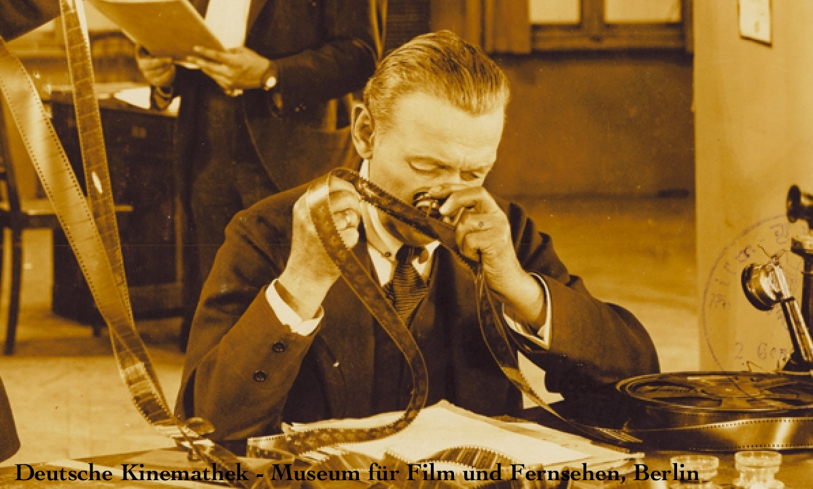
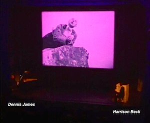
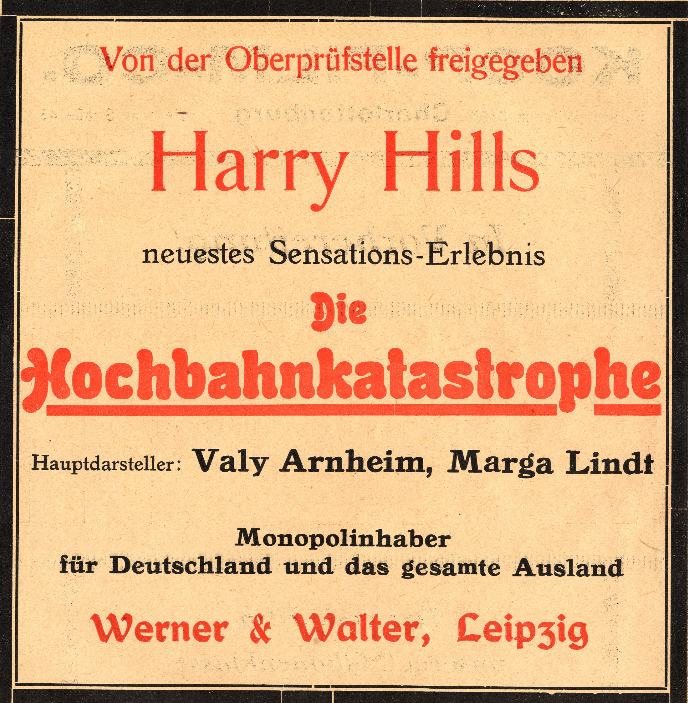
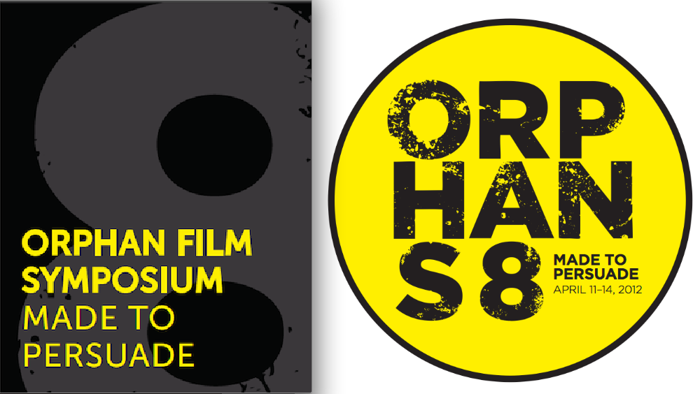

The 8th Orphan Film Symposium
Made to Persuade
April 11-14, 2012
Museum of the Moving Image (Astoria, Queens)
Wed/4.11 • Thurs/4.12 • Fri/4.13 • Sat/4.14
* * * * * * * * * * * * * * * * * * * * * * *
WEDNESDAY • APRIL 11 • 8:00 pm
Sensation | Transformation | Persuasion
 Orphans 8 Trailer #1 (Russell Sheaffer)
Orphans 8 Trailer #1 (Russell Sheaffer)
 Carl Goodman (Museum of the Moving Image, Director) Greetings
Carl Goodman (Museum of the Moving Image, Director) Greetings
Mother and Child (Tony Schwartz, Citizens for Humphrey-Muskie, 1968) 
Convention (Eugene Jones, 1968) with Leonard Garment, Harry Treleaven, & Frank Shakespeare
Dan Streible (NYU) introduces Transformations (Ralph Sargent, for IBM, 1968) 
Benedict Salazar Olgado (NYU MIAP) introduces Anke Mebold (Deutsches Filminstitut) and
Tom Gunning (U of Chicago)
on the new DIF restorationwith thanks to Thomas Lang (ABC&TaunusFilm)

The 16th Sensational Adventure of Master Detective Harry Hill
Die Hochbahnkatastrophe
(The Elevated Train Catastrophe, Valy Arnheim, 1921)
Dennis James pianist, Harrison M. Beck narrator


ad from the Berlin trade periodical Der Film no. 44 (1921)
Bonus: +
+ Here's an MP3 of pianist Stephen Horne's commissioned accompaniment to reel 2 of Die Hochbahnkatastrophe.
++ Here's a PDF of the booklet for the Orphans 8 DVD, Made to Persuade (2012). The compilation includes reel 2 of Die Hochbahnkatastrophe, courtesy of Deutsches Filminstitut (DIF), accompanied by this new music by Stephen Horne.

cover art by Joseph Botero. DVD produced by Rufus de Rham, Crystal Sanchez, and Marie Lascu (NYU MIAP).